Getting started with imager
Simon Barthelmé
2016-08-26
- 1 Plotting and loading images
- 2 Example 1: Histogram equalisation
- 3 imager and ggplot2
- 4 Blob detection/extraction of local maxima, denoising, scale-space
- 5 How images are represented
- 6 imager functions by theme
- 7 Learning more
imager contains a large array of functions for working with image data, with most of these functions coming from the CImg library by David Tschumperlé. This vignette is just a short tutorial, you’ll find more information and examples on the website. Each function in the package is documented and comes with examples, so have a look at package documentation as well.
1 Plotting and loading images
imager comes with an example picture of boats. Let’s have a look:
library(imager)
plot(boats)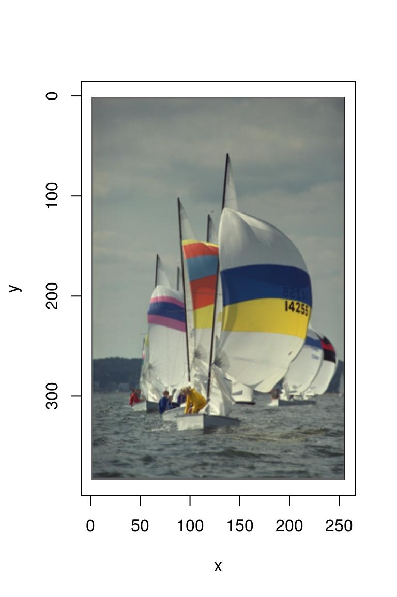
Note the y axis running downwards: the origin is at the top-left corner, which is the traditional coordinate system for images. imager uses this coordinate system consistently. Image data has class “cimg”:
class(boats)[1] "cimg"and we can get some basic info by typing:
boatsImage. Width: 256 pix Height: 384 pix Depth: 1 Colour channels: 3 Width and height should be self-explanatory. Depth is how many frames the image has: if depth > 1 then the image is actually a video. Boats has three colour channels, the usual RGB. A grayscale version of boats would have only one:
grayscale(boats)Image. Width: 256 pix Height: 384 pix Depth: 1 Colour channels: 1 An object of class cimg is actually just a thin interface over a regular 4D array:
dim(boats)[1] 256 384 1 3We’ll see below how images are stored exactly. For most intents and purposes, they behave like regular arrays, meaning the usual arithmetic operations work:
log(boats)+3*sqrt(boats)Image. Width: 256 pix Height: 384 pix Depth: 1 Colour channels: 3 mean(boats)[1] 129.7711sd(boats)[1] 36.92322The next thing you’ll probably want to be doing is to load an image, which can be done using load.image. imager ships with another example image, which is stored somewhere in your R library. We find out where using system.file
fpath <- system.file('extdata/parrots.png',package='imager')We’re now ready to load the image:
parrots <- load.image(fpath)
plot(parrots)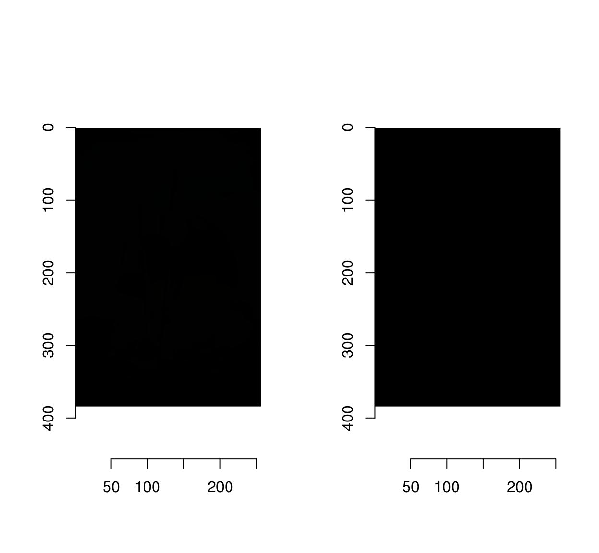
imager supports JPEG, PNG and BMP natively - for other formats you’ll need to install ImageMagick.
2 Example 1: Histogram equalisation
Histogram equalisation is a textbook example of a contrast-enhancing filter. It’s also a good topic for an introduction to what you can do with imager.
Image histograms are just histogram of pixel values, which are of course pretty easy to obtain in R:
grayscale(boats) %>% hist(main="Luminance values in boats picture")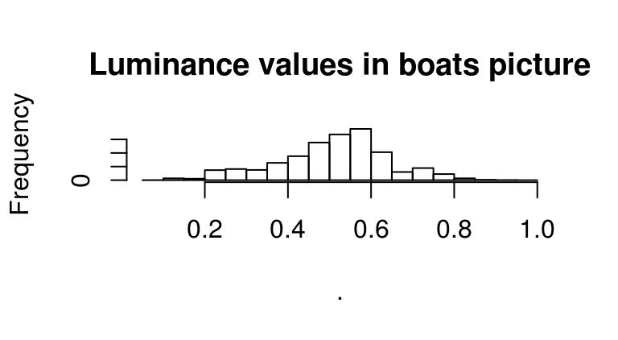
Since images are stored essentially as arrays, here we’re just using R’s regular hist function, which treats our array as a vector of values. If we wanted to look only at the red channel, we could use:
R(boats) %>% hist(main="Red channel values in boats picture")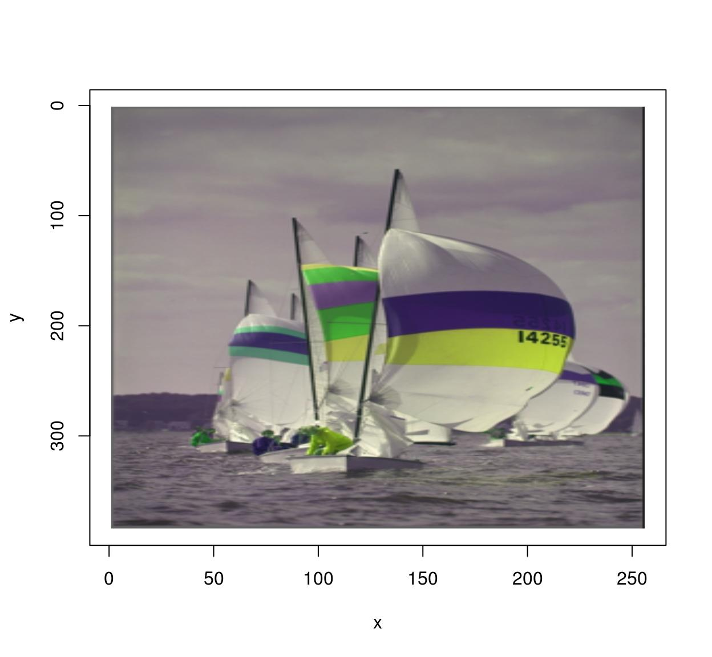
#Equivalently:
#channel(boats,1) %>% hist(main="Red channel values in boats picture")Another approach is to turn the image into a data.frame, and use ggplot to view all channels at once:
library(ggplot2)
bdf <- as.data.frame(boats)
head(bdf,3) x y cc value
1 1 1 1 99.00000
2 2 1 1 98.39513
3 3 1 1 98.15985bdf <- plyr::mutate(bdf,channel=factor(cc,labels=c('R','G','B')))
ggplot(bdf,aes(value,col=channel))+geom_histogram(bins=30)+facet_wrap(~ channel)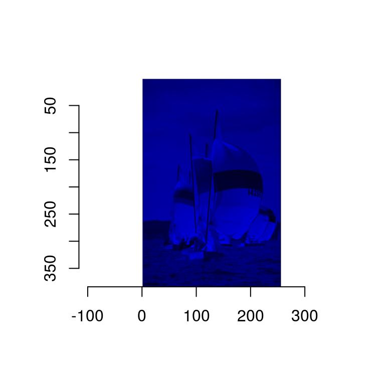
What we immediately see from these histograms is that the middle values are in a sense over-used: there’s very few pixels with high or low values. Histogram equalisation solves the problem by making histograms flat: each pixel’s value is replaced by its rank, which is equivalent to running the data through their empirical cdf.
As an illustration of what this does, see the following example:
x <- rnorm(100)
layout(t(1:2))
hist(x,main="Histogram of x")
f <- ecdf(x)
hist(f(x),main="Histogram of ecdf(x)")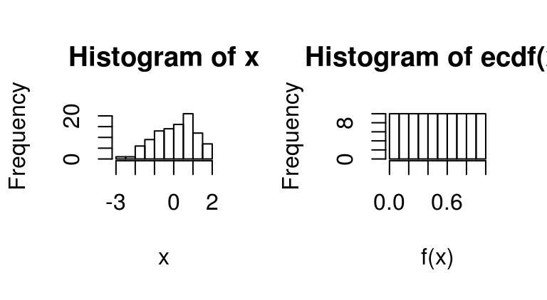
We can apply it directly to images as follows:
boats.g <- grayscale(boats)
f <- ecdf(boats.g)
plot(f,main="Empirical CDF of luminance values")
Again we’re using a standard R function (ecdf), which returns another function corresponding to the ECDF of luminance values in boats.g.
If we run the pixel data back through f we get a flat histogram:
f(boats.g) %>% hist(main="Transformed luminance values")
Now the only problem is that ecdf is base R, and unaware of our cimg objects. The function f took an image and returned a vector:
f(boats.g) %>% str num [1:98304] 0.175 0.169 0.168 0.168 0.17 ...If we wish to get an image back we can just use as.cimg:
f(boats.g) %>% as.cimg(dim=dim(boats.g)) %>% plot(main="With histogram equalisation")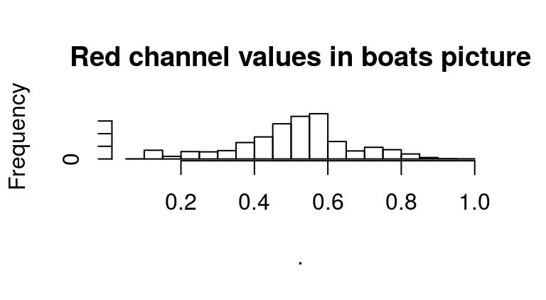
So far we’ve run this on a grayscale image. If we want to do this on RGB data, we need to run the equalisation separately in each channel. imager enables this using its split-apply-combine tricks:
#Hist. equalisation for grayscale
hist.eq <- function(im) as.cimg(ecdf(im)(im),dim=dim(im))
#Split across colour channels,
cn <- imsplit(boats,"c")
cn #we now have a list of images$`c = 1`
Image. Width: 256 pix Height: 384 pix Depth: 1 Colour channels: 1
$`c = 2`
Image. Width: 256 pix Height: 384 pix Depth: 1 Colour channels: 1
$`c = 3`
Image. Width: 256 pix Height: 384 pix Depth: 1 Colour channels: 1 cn.eq <- llply(cn,hist.eq) #run hist.eq on each
imappend(cn.eq,"c") %>% plot(main="All channels equalised") #recombine and plot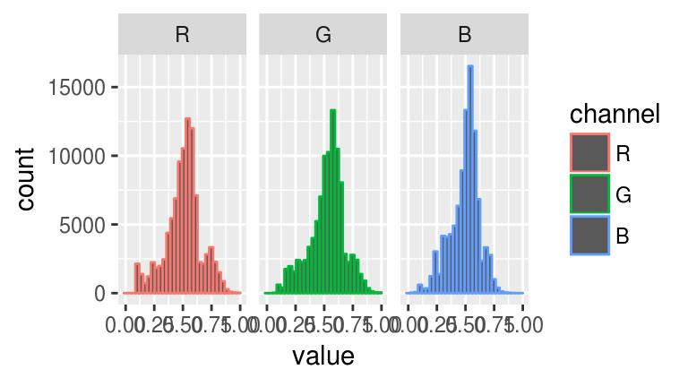
There’s even a one-liner to do this:
iiply(boats,"c",hist.eq) Image. Width: 256 pix Height: 384 pix Depth: 1 Colour channels: 3 We can use it to check that all channels have been properly normalised:
iiply(boats,"c",hist.eq) %>% as.data.frame %>% ggplot(aes(value))+geom_histogram(bins=30)+facet_wrap(~ cc)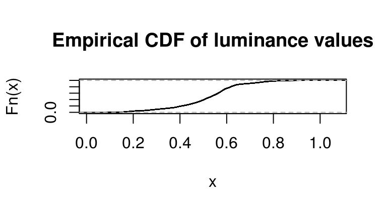
Our trick worked.
2.1 Example 2: Edge detection
Edge detection relies on image gradients, which imager returns via:
layout(t(1:2))
imgradient(boats.g,"x") %>% plot(main="Gradient along x")
imgradient(boats.g,"y") %>% plot(main="Gradient along y")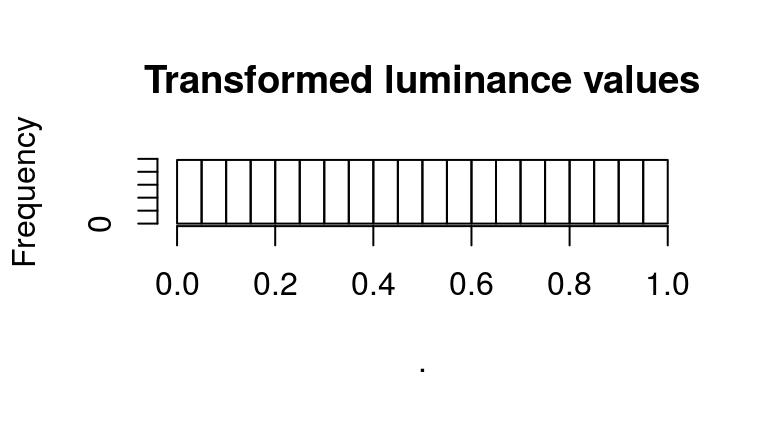
To be more specific, noting \(I(x,y)\) the image intensity at location \(x,y\), what imager returns is an approximation of: \[ \frac{\partial}{\partial x}I \] in the first panel and: \[ \frac{\partial}{\partial y}I \] in the second.
The magnitude of the gradients thus tell us how fast the image changes around a certain point. Image edges correspond to abrubt changes in the image, and so it’s reasonable to estimate their location based on the norm of the gradient \[ \sqrt{\left(\frac{\partial}{\partial x}I\right)^{2}+\left(\frac{\partial}{\partial y}I\right)^{2}} \]
In imager:
dx <- imgradient(boats.g,"x")
dy <- imgradient(boats.g,"y")
grad.mag <- sqrt(dx^2+dy^2)
plot(grad.mag,main="Gradient magnitude")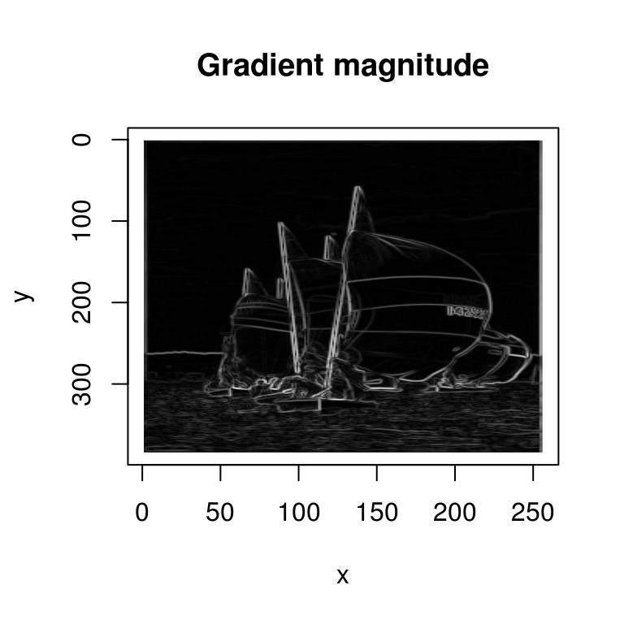
Here’s a handy shortcut:
imgradient(boats.g,"xy") %>% enorm %>% plot(main="Gradient magnitude (again)")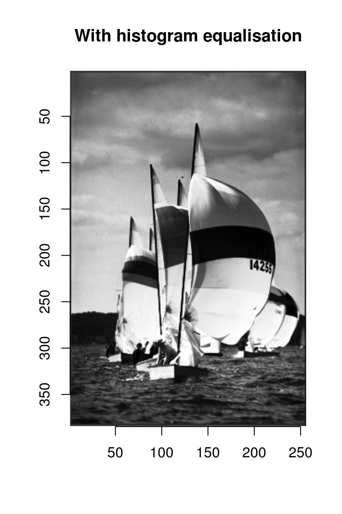
The first function returns a list of images:
l <- imgradient(boats.g,"xy")
str(l)List of 2
$ x: cimg [1:256, 1:384, 1, 1] 0.002784 0.002879 -0.000485 -0.000331 0.000134 ...
$ y: cimg [1:256, 1:384, 1, 1] 0.00483 0.011 0.01502 0.01439 0.01358 ...And the second takes a list of images and computes the Euclidean norm pixel-wise, i.e.:
enorm(list(3,2))[1] 3.605551sqrt(3^2+2^2)[1] 3.605551enorm is an example of a “reduction” function. They’re useful for combining pixel values over several images. We’ll see another example below when we look at blob detection.
3 imager and ggplot2
To plot your image data using ggplot2, use as.data.frame and geom_raster:
df <- grayscale(boats) %>% as.data.frame
p <- ggplot(df,aes(x,y))+geom_raster(aes(fill=value))
p
We’re not quite there, mainly because or y axis is reversed. Here’s a fix:
p + scale_y_continuous(trans=scales::reverse_trans())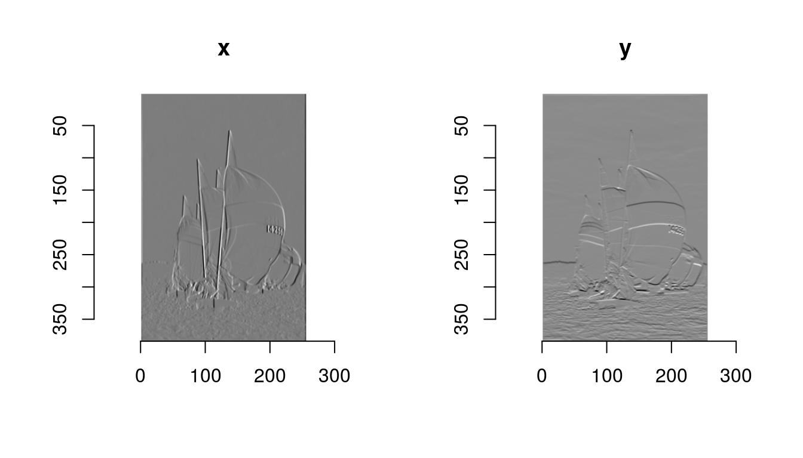
The grey margin around the plot should be eliminated as well:
p <- p+scale_x_continuous(expand=c(0,0))+scale_y_continuous(expand=c(0,0),trans=scales::reverse_trans())
p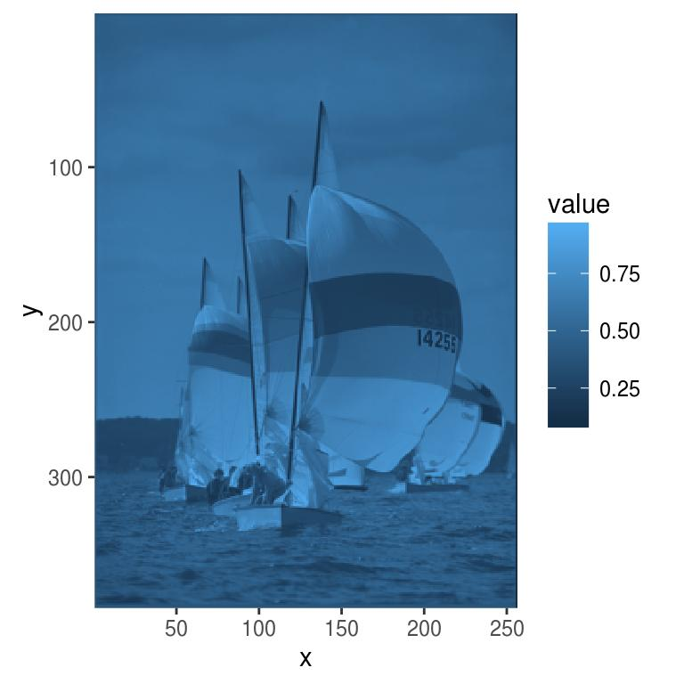
Finally, ggplot has a blue colour scale by default, but we might want to keep our original grays:
p+scale_fill_gradient(low="black",high="white")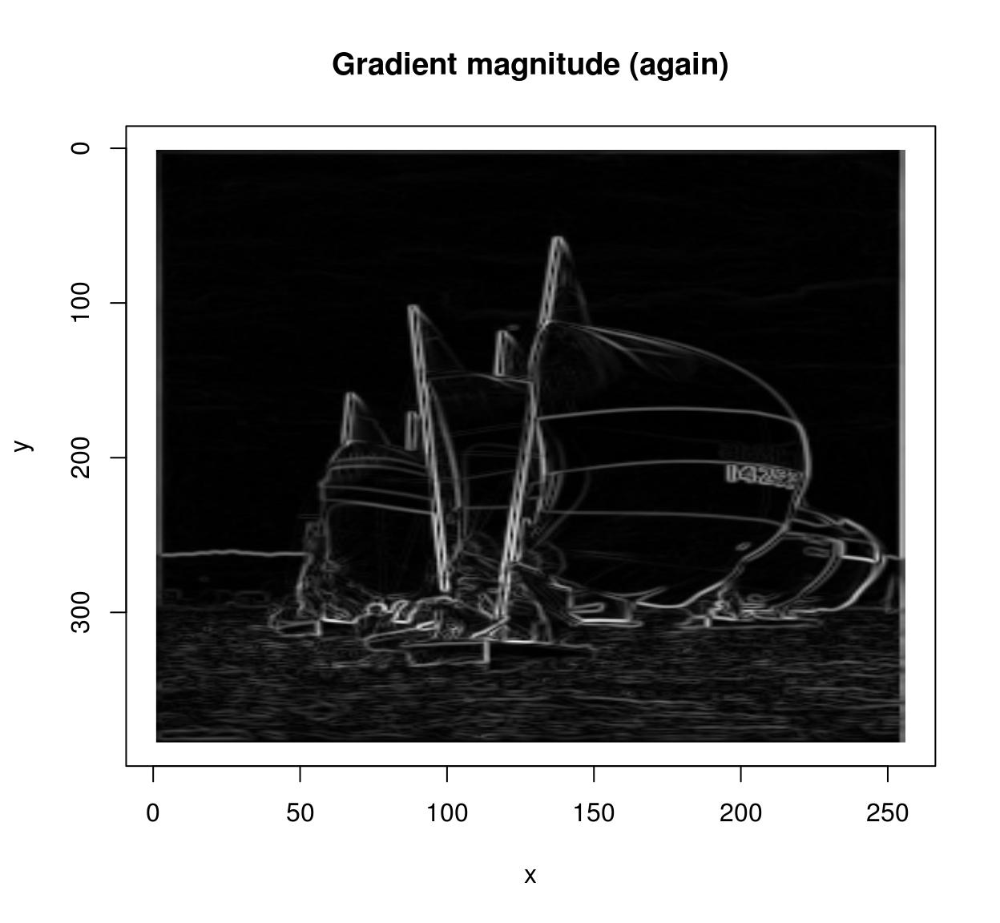
Colour images are a bit trickier. We could plot each channel separately:
df <- as.data.frame(boats)
p <- ggplot(df,aes(x,y))+geom_raster(aes(fill=value))+facet_wrap(~ cc)
p+scale_y_reverse()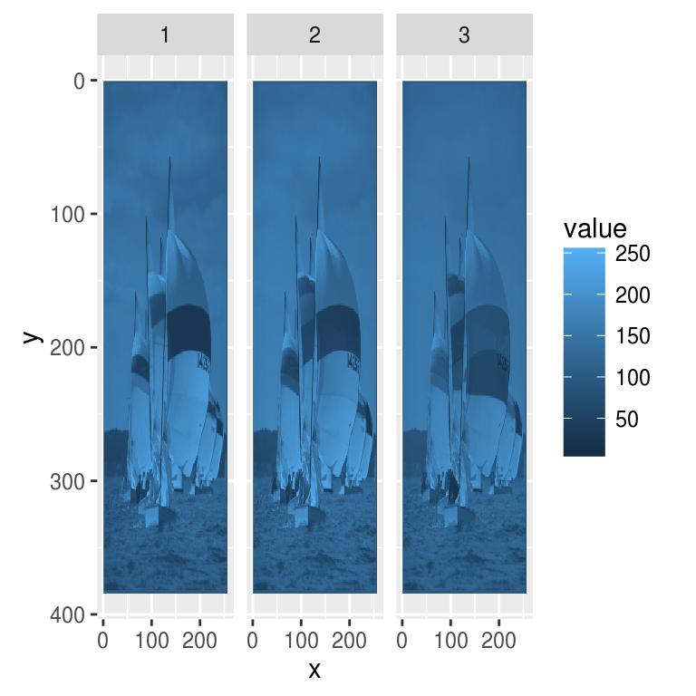
Plotting channels separately may be useful on occasion, but usually we’d want the original colours. We can tell as.data.frame to return a “wide” format:
as.data.frame(boats,wide="c") %>% head x y c.1 c.2 c.3
1 1 1 99.00000 99.00000 99.00000
2 2 1 98.39513 98.39513 98.39513
3 3 1 98.15985 98.15985 98.15985
4 4 1 98.23828 98.23828 98.23828
5 5 1 98.43990 98.43990 98.43990
6 6 1 98.31671 98.31671 98.31671The three colour channels are now stacked along columns, which lets us do the following:
df <- as.data.frame(boats,wide="c") %>% mutate(rgb.val=rgb(c.1/255,c.2/255,c.3/255))
head(df,3) x y c.1 c.2 c.3 rgb.val
1 1 1 99.00000 99.00000 99.00000 #636363
2 2 1 98.39513 98.39513 98.39513 #626262
3 3 1 98.15985 98.15985 98.15985 #626262We can now plot our image using ggplot’s identity scale:
p <- ggplot(df,aes(x,y))+geom_raster(aes(fill=rgb.val))+scale_fill_identity()
p+scale_y_reverse()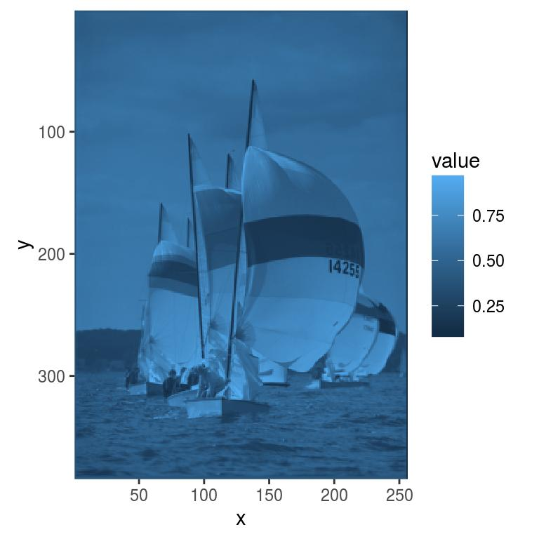
We’ll see more interesting uses for ggplot2 later.
4 Blob detection/extraction of local maxima, denoising, scale-space
Our goal will be to find the coordinates of the galaxies in this picture (I took the idea from the documentation for scikit-image):
hub <- load.example("hubble") %>% grayscale
plot(hub,main="Hubble Deep Field")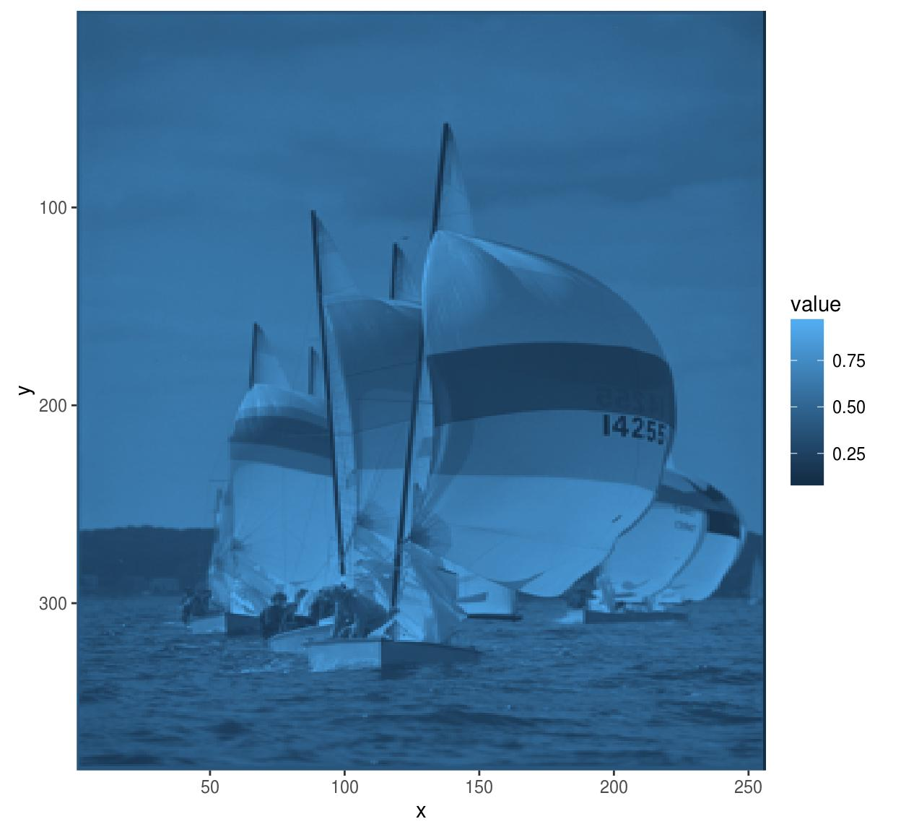
Before we can work with the real image we’ll try synthetic data. Here’s how to generate an image with a few randomly placed blobs:
layout(t(1:2))
set.seed(2)
points <- rbinom(100*100,1,.001) %>% as.cimg
blobs <- isoblur(points,5)
plot(points,main="Random points")
plot(blobs,main="Blobs")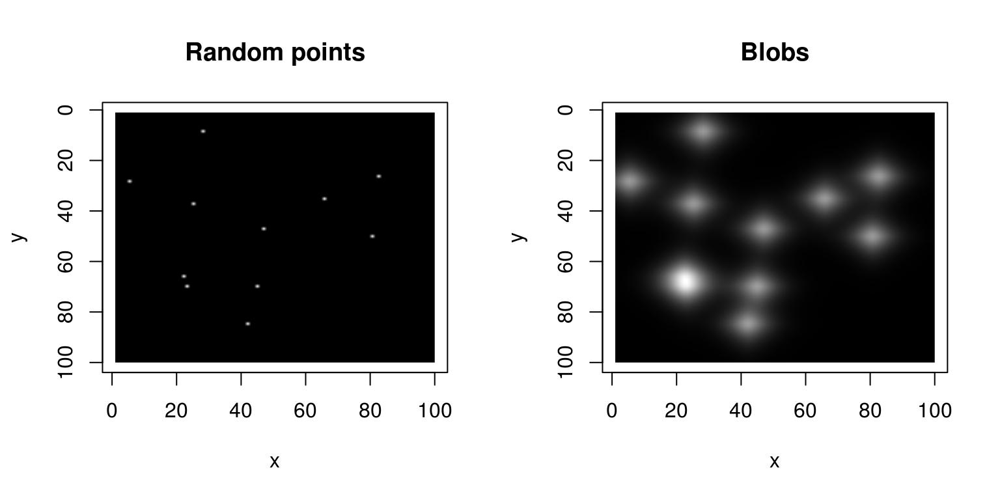
blobs are obtained from random points convolved with a blur kernel of size 5 pixels. Note the shortcut in:
rbinom(100*100,1,.001) %>% as.cimgWarning in as.cimg.vector(obj, ...): Guessing input is a square 2D imageImage. Width: 100 pix Height: 100 pix Depth: 1 Colour channels: 1 where a vector of length 100^2 is turned into an image of dimension 100x100. That’s just a guess on imager’s part and it’s reported with a warning (we could be dealing with an image of dimension 10x1000, for instance). To get rid of the warning you have to be explicit about the dimensions you want:
rbinom(100*100,1,.001) %>% as.cimg(x=100,y=100)Image. Width: 100 pix Height: 100 pix Depth: 1 Colour channels: 1 Suppose our task is to find the location of the center of the blobs. There are several way of doing that, but one that’s convenient is to go through image hessians. Blobs are local maxima in the image, and local maxima are usually associated with a hessian matrix that’s positive definite (the well-known second-order optimality condition). A matrix that’s positive definite has positive determinant, which we can compute via:
\[ \mathrm{det}(H) = I_{xx} \times I_{yy} - I_{xy}^2 \]
where \(I_{xx}\) is the second derivative of the image along x, etc. See wikipedia on blob detection for more.
In imager we can use:
imhessian(blobs)$xx
Image. Width: 100 pix Height: 100 pix Depth: 1 Colour channels: 1
$xy
Image. Width: 100 pix Height: 100 pix Depth: 1 Colour channels: 1
$yy
Image. Width: 100 pix Height: 100 pix Depth: 1 Colour channels: 1 to get the derivatives we need, and:
Hdet <- with(imhessian(blobs),(xx*yy - xy^2))
plot(Hdet,main="Determinant of Hessian")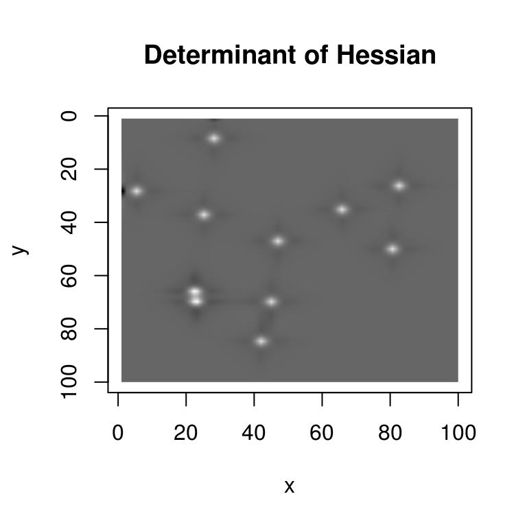
To get only the pixels with the highest values, we threshold the image:
threshold(Hdet,"99%") %>% plot(main="Determinant: 1% highest values")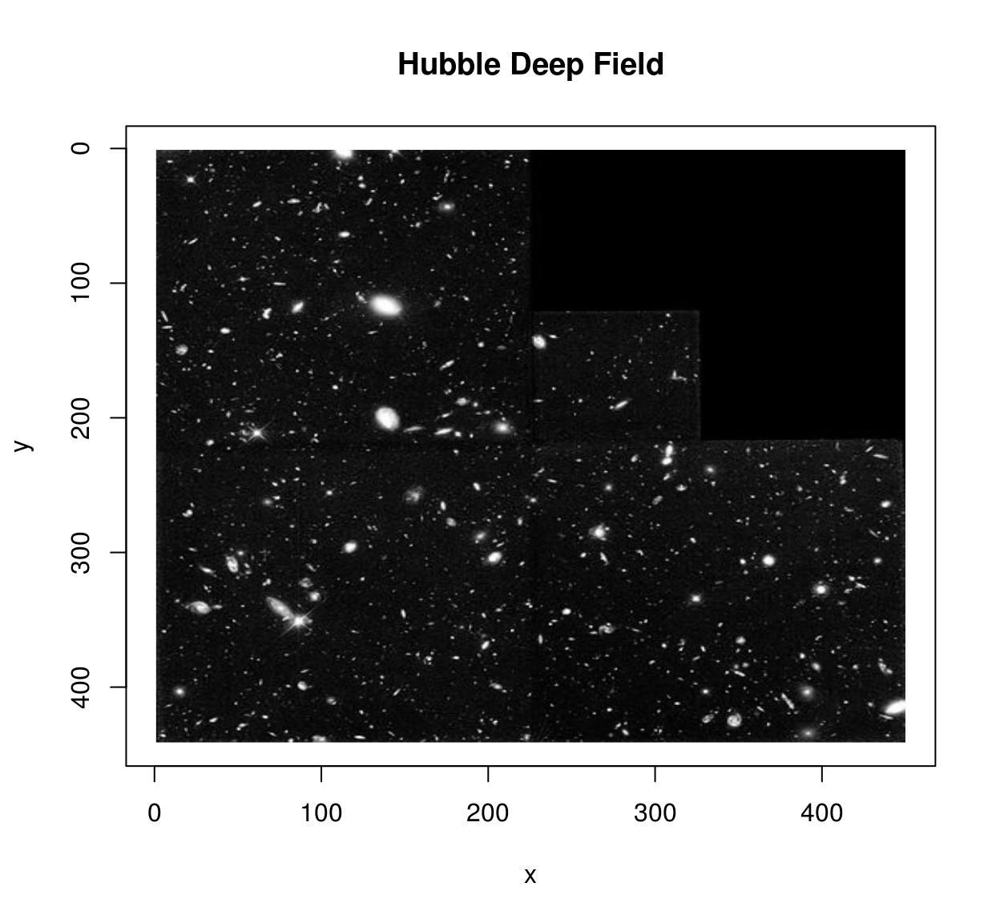
The thresholded image now contains discrete image regions, and if we can compute the center of these regions we’ll have our locations. The first step is to label these regions:
lab <- threshold(Hdet,"99%") %>% label
plot(lab,main="Labelled regions")
label is a utility that fills each white region with a unique pixel value (the background stays at 0). We can extract the labelled regions in the form of a data.frame:
df <- as.data.frame(lab) %>% subset(value>0)
head(df,3) x y value
528 28 6 1
627 27 7 1
628 28 7 1unique(df$value) #10 regions [1] 1 2 3 4 5 6 7 8 9 10And now all we need to do is to split the data.frame into regions, and compute the mean coordinate values in each. We’ll show two solutions, one using plyr, the other using the more recent dplyr variant:
centers <- ddply(df,.(value),summarise,mx=mean(x),my=mean(y))
centers <- dplyr::group_by(df,value) %>% dplyr::summarise(mx=mean(x),my=mean(y))As an exercise you can try extracting other summary values for the regions (area, for example, or aspect ratio).
We now overlay the results on the original image:
plot(blobs)
with(centers,points(mx,my,col="red"))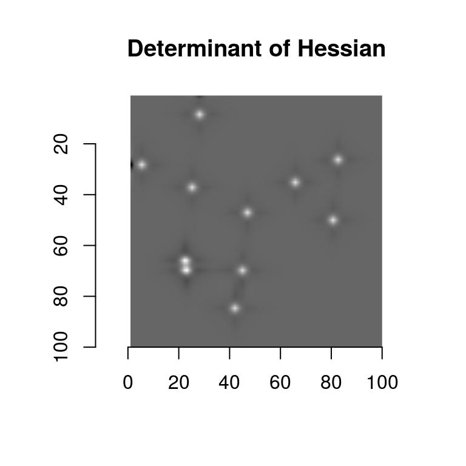
That’s pretty good, but to make things a bit harder we’ll add noise to the image:
nblobs <- blobs+.001*imnoise(dim=dim(blobs))
plot(nblobs,main="Noisy blobs")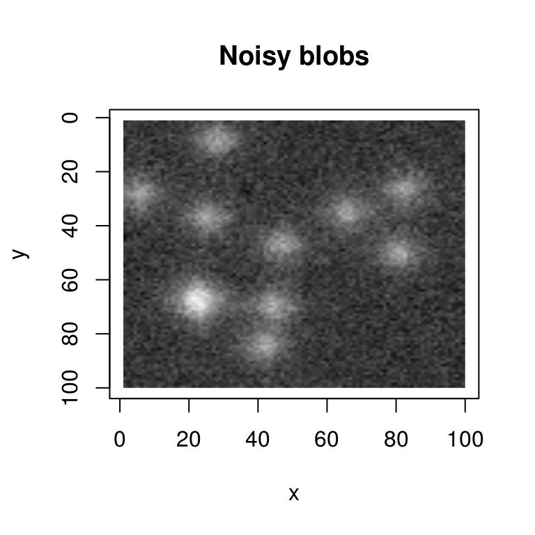
If we try the same thing again it fails completely:
get.centers <- function(im,thr="99%")
{
dt <- imhessian(im) %$% { xx*yy - xy^2 } %>% threshold(thr) %>% label
as.data.frame(dt) %>% subset(value>0) %>% dplyr::group_by(value) %>% dplyr::summarise(mx=mean(x),my=mean(y))
}
plot(nblobs)
get.centers(nblobs,"99%") %$% points(mx,my,col="red")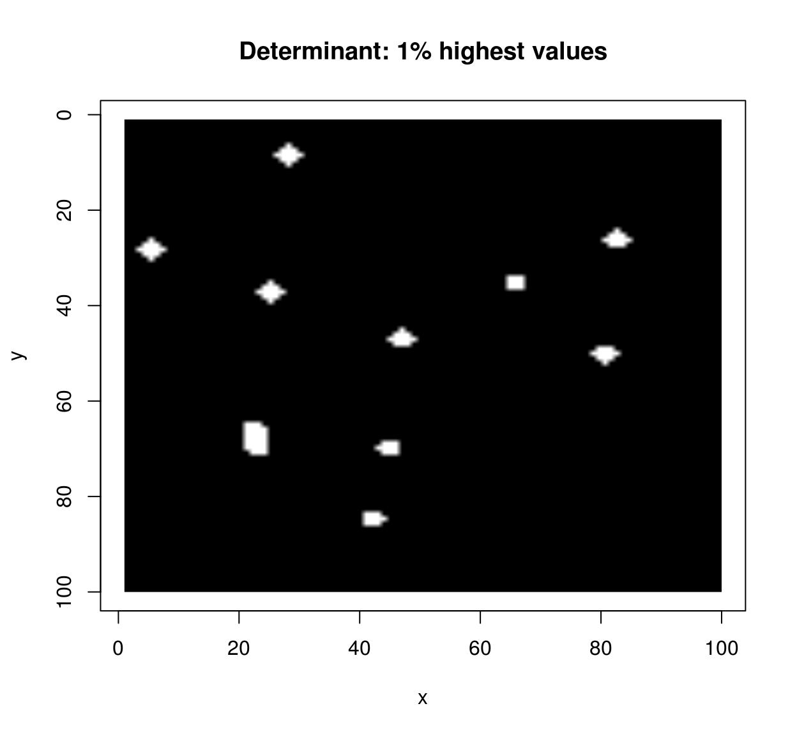
We need an extra denoising step. Simple blurring will do here:
nblobs.denoised <- isoblur(nblobs,2)
plot(nblobs.denoised)
get.centers(nblobs.denoised,"99%") %$% points(mx,my,col="red")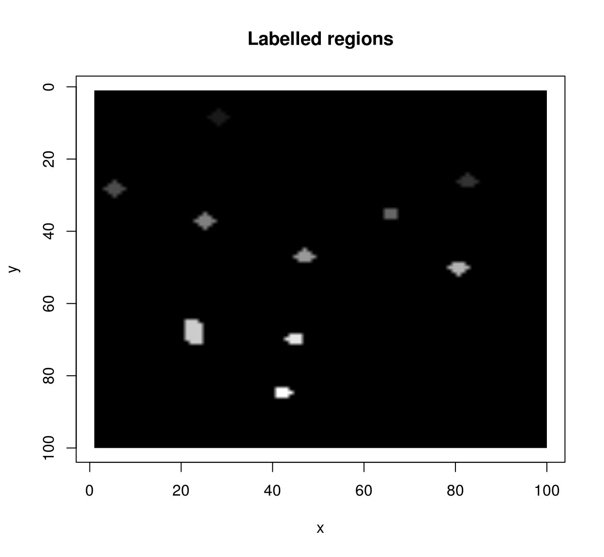
We’re ready to move on to the Hubble image. Here’s a first naive attempt:
plot(hub)
get.centers(hub,"99.8%") %$% points(mx,my,col="red")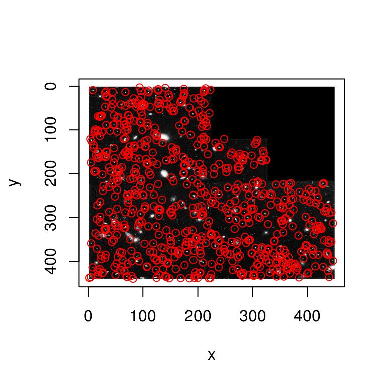
Our detector is mostly picking up small objects. Adding blur results in:
plot(hub)
isoblur(hub,5) %>% get.centers("99.8%") %$% points(mx,my,col="red")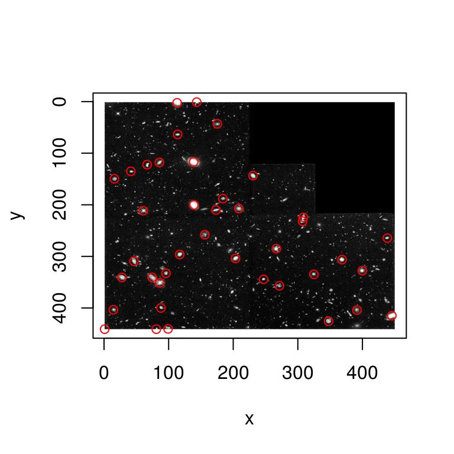
and the detector is now picking up large objects only. What if we want to detect objects at various scale? The solution is to aggregate the results over scale, which is what multiscale approaches do.
#Compute determinant at scale "scale".
hessdet <- function(im,scale=1) isoblur(im,scale) %>% imhessian %$% { scale^2*(xx*yy - xy^2) }
#Note the scaling (scale^2) factor in the determinant
plot(hessdet(hub,1),main="Determinant of the Hessian at scale 1")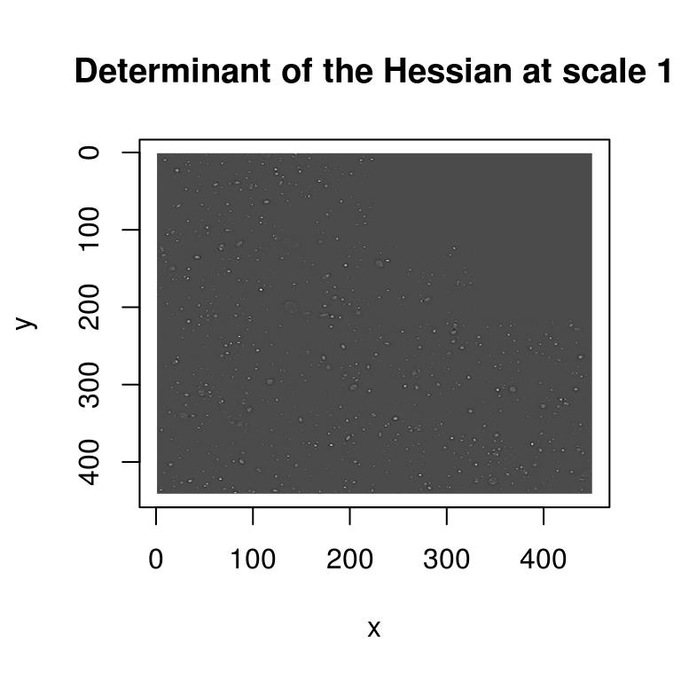
To view the results at different scales, we can use ggplot:
#Get a data.frame with results at scale 2, 3 and 4
dat <- ldply(c(2,3,4),function(scale) hessdet(hub,scale) %>% as.data.frame %>% mutate(scale=scale))
p <- ggplot(dat,aes(x,y))+geom_raster(aes(fill=value))+facet_wrap(~ scale)
p+scale_x_continuous(expand=c(0,0))+scale_y_continuous(expand=c(0,0),trans=scales::reverse_trans())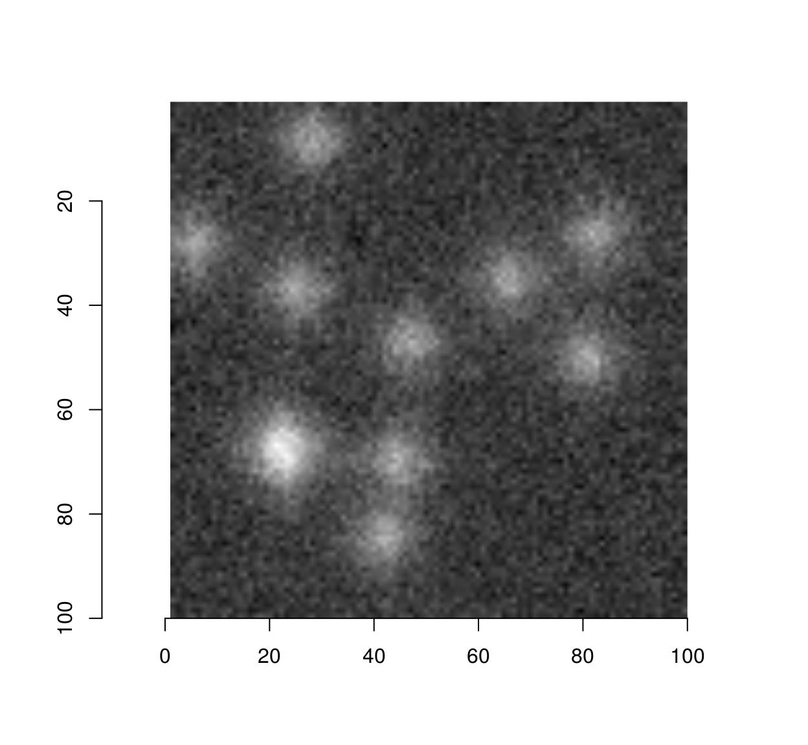
Scale-space theory suggests that we look for blobs across scales. It’s easy:
scales <- seq(2,20,l=10)
d.max <- llply(scales,function(scale) hessdet(hub,scale)) %>% parmax
plot(d.max,main="Point-wise maximum across scales")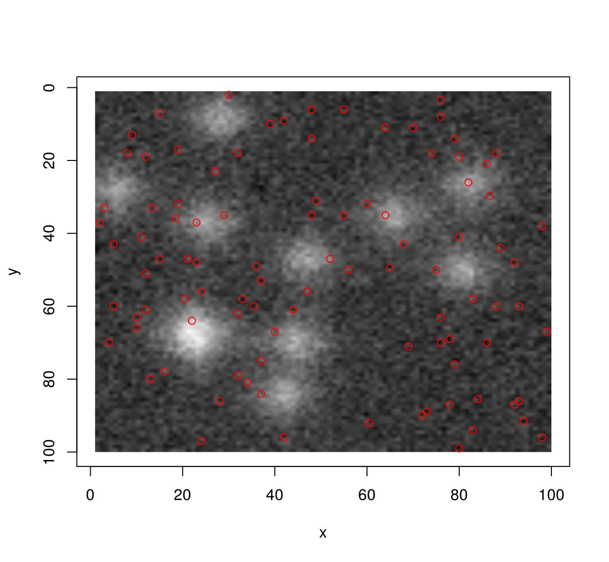
parmax is another example of a reduction function, one that here takes the maximum value for each pixel across all scales. To find out which scale had the maximum value point-wise, we can use which.parmax:
i.max <- llply(scales,function(scale) hessdet(hub,scale)) %>% which.parmax
plot(i.max,main="Index of the point-wise maximum across scales")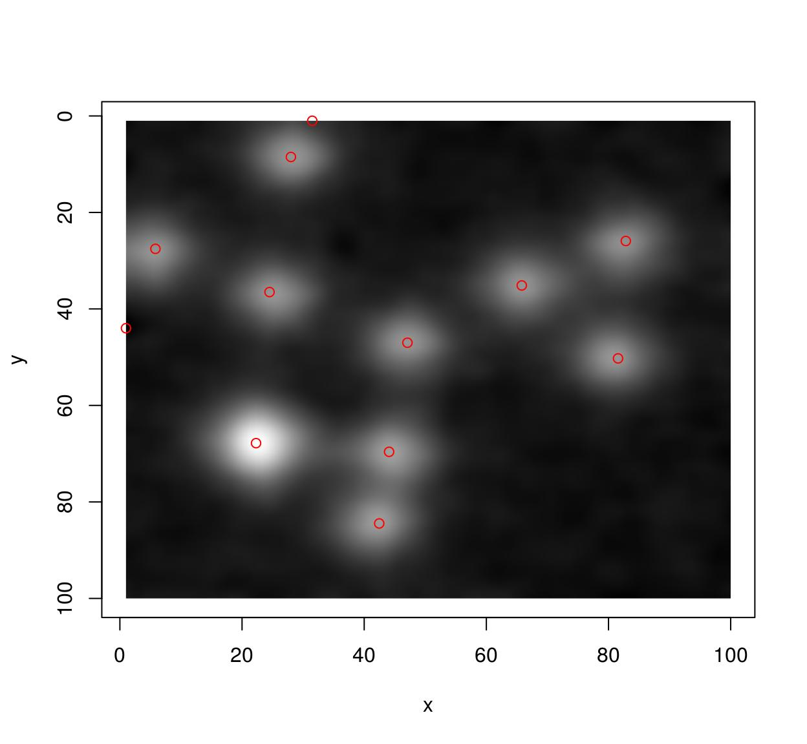
So far this isn’t too informative. It will be once we have labelled regions:
#Get a data.frame of labelled regions
labs <- d.max %>% threshold("96%") %>% label %>% as.data.frame
#Add scale indices
labs <- mutate(labs,index=as.data.frame(i.max)$value)
regs <- dplyr::group_by(labs,value) %>% dplyr::summarise(mx=mean(x),my=mean(y),scale.index=mean(index))
p <- ggplot(as.data.frame(hub),aes(x,y))+geom_raster(aes(fill=value))+geom_point(data=regs,aes(mx,my,size=scale.index),pch=2,col="red")
p+scale_fill_gradient(low="black",high="white")+scale_x_continuous(expand=c(0,0))+scale_y_continuous(expand=c(0,0),trans=scales::reverse_trans())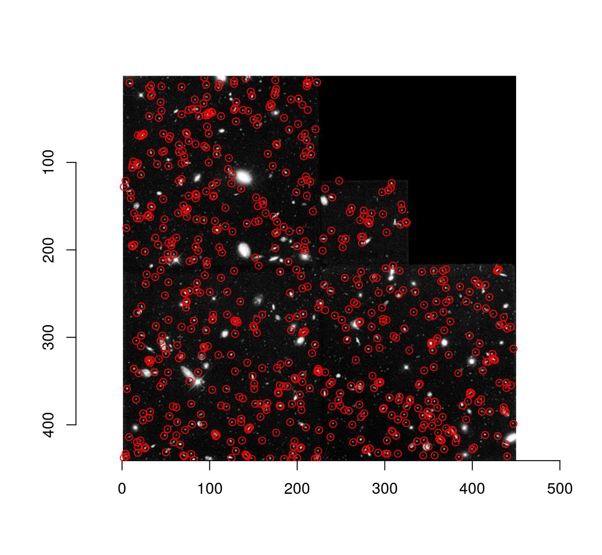
The results aren’t perfect - there are spurious points (especially along the seamlines), but it’s not a bad start given the small amount of code. Note how the scale index follows the scale of the actual objects.
5 How images are represented
It’s important to know how imager stores image data, if only to understand the occasional error messages. Images are represented as 4D numeric arrays, which is consistent with CImg’s storage standard (it is unfortunately inconsistent with other R libraries, like spatstat, but converting between representations is easy). The four dimensions are labelled x,y,z,c. The first two are the usual spatial dimensions, the third one will usually correspond to depth or time, and the fourth one is colour. Remember the order, it will be used consistently in imager. If you only have grayscale images then the two extra dimensions are obviously pointless, but they won’t bother you much. Your objects will still be officially 4 dimensional, with two trailing flat dimensions. Pixels are stored in the following manner: we scan the image beginning at the upper-left corner, along the x axis. Once we hit the end of the scanline, we move to the next line. Once we hit the end of the screen, we move to the next frame (increasing z) and repeat the process. If we have several colour channels, then once we’re done with the first colour channel we move to the next one. All in all the different dimensions are represented in the x,y,z,c order. In R the object is represented as a 4D array. Here’s an example with a grayscale image:
parrots <- load.example("parrots")
gray.parrots <- grayscale(parrots)
dim(gray.parrots)[1] 768 512 1 1and a colour image:
dim(parrots)[1] 768 512 1 3In a similar vein, a 400x400 colour video of 50 frames will have dimension 400x400x50x3 (which is of course fairly large, beware memory issues when working with videos).
In order to save you some time, most functions try to have reasonable defaults so that you don’t have to specify all dimensions if you’re only working with a grayscale picture. For example, you can use the array subset operator as if you only had two dimensions:
im <- imfill(10,10)
dim(im)[1] 10 10 1 1im[,1] <- 1:10 #Change the first *row* in the image - dimensions are x,y,z,c
im[,1,1,1] <- 1:10 #Same thing, more verbose
plot(im)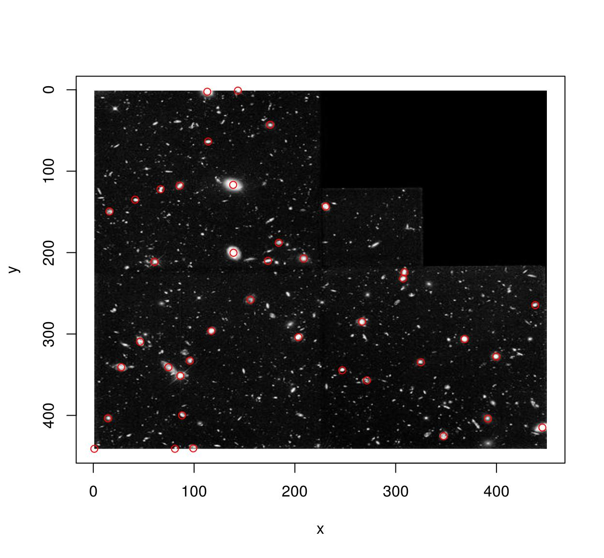
Other functions will try to guess what sort of an image you want:
as.cimg(1:9) #Guesses you want a 3x3 imageImage. Width: 3 pix Height: 3 pix Depth: 1 Colour channels: 1 as.cimg(1:10) #Ambiguous, issues an errorError in as.cimg.vector(obj, ...): Please provide image dimensionsas.cimg(array(1,c(10,10))) #Assumes it's a grayscale image you wantImage. Width: 10 pix Height: 10 pix Depth: 1 Colour channels: 1 as.cimg(array(1:9,c(10,10,3))) #Assumes it's a colour image (last dimension 3)Image. Width: 10 pix Height: 10 pix Depth: 1 Colour channels: 3 as.cimg(array(1:9,c(10,10,4))) #Assumes it's a grayscale video with 4 frames (last dimension != 3)Image. Width: 10 pix Height: 10 pix Depth: 4 Colour channels: 1 6 imager functions by theme
All functions are documented.
6.1 Loading, saving, reading image information
- load.image,save.image,iminfo
- plot.cimg, display, display_list, play, renorm
- width, height, depth, spectrum,nPix
6.2 Accessing image data, converting to and from other data structures
6.2.1 Conversions
- as.data.frame.cimg, as.matrix.cimg, as.array.cimg, squeeze
- as.cimg, cimg
- im2cimg,cimg2im
6.2.2 Image parts
- pixel.grid, pixel.index
- imrow,imcol,at,color.at
- channel, channel<-, channels, R, R<-, G, G<-, B, B<-,
- frame, frame<-, frames
- subim
6.2.3 Neighbourhoods
- center.stencil, get.locations, get.stencil, stencil.cross
- extract_patches,extract_patches3D
6.2.4 Interpolation
- interp
6.3 Generating images
- capture.plot
- as.cimg.function
- imnoise,imfill,imdirac
6.4 Modifying images
- add.colour,grayscale
- imresize,resize,resize,resize_doubleXY,resize_halfXY,resize_tripleXY
- autocrop, pad
- threshold, renorm
- permute_axes
- imshift, imrotate, mirror, rotate_xy, imwarp, warp
- imdraw, selectSimilar, bucketfill
6.5 Filtering and FFTs
- imgradient,imhessian,vanvliet,get_gradient,deriche
- correlate, convolve
- medianblur,isoblur,blur_anisotropic,boxblur,boxblur_xy
- imsharpen
- FFT, haar, periodic.part
6.6 Morphology
- dilate,dilate_rect,dilate_square
- mopening,mopening_square,mclosing,mclosing_square
- erode, erode_rect, erode_square
- distance_transform, watershed, label
6.7 Colour spaces
- YCbCrtoRGB, YUVtoRGB, sRGBtoRGB,HSItoRGB,HSLtoRGB,HSVtoRGB
- RGBtoHSI,RGBtoHSL,RGBtoHSV,RGBtosRGB,RGBtoYCbCr,RGBtoYUV
6.8 Split-apply-combine
- imsplit, imappend,
- liply, iiply, ilply, idply
6.9 Reductions
- parmin, parmax, parmax.abs, which.parmax,which.parmin,parmin.abs
- add, mult, enorm
6.10 Misc.
- displacement, diffusion_tensors
7 Learning more
Have a look around the website.